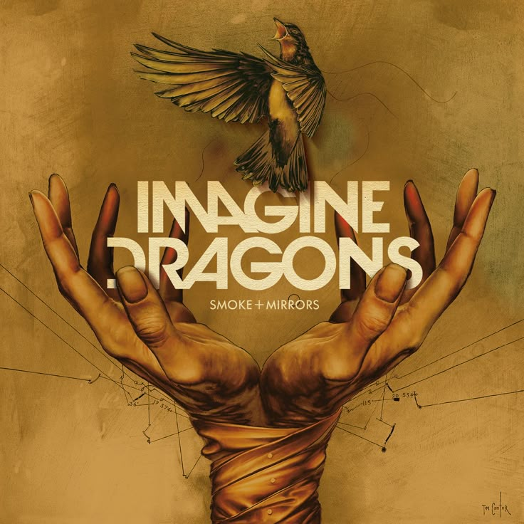
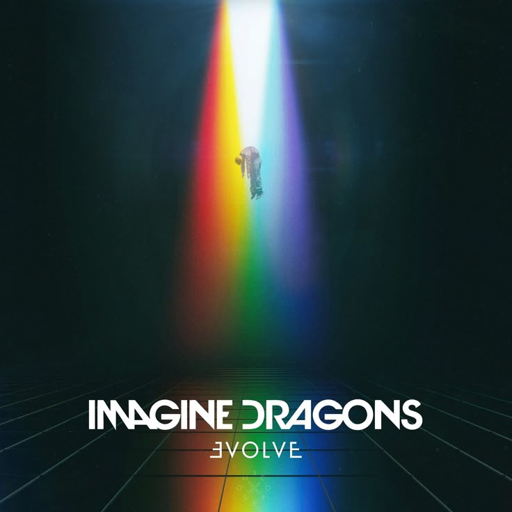
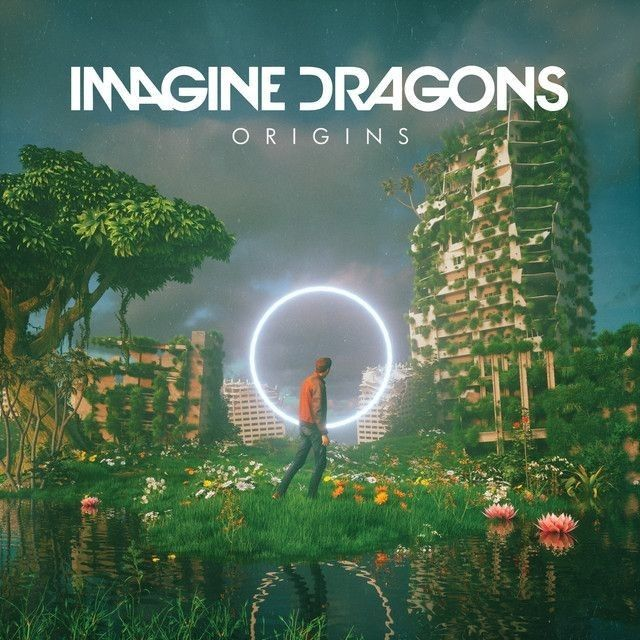
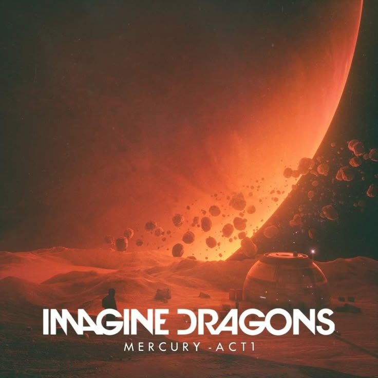
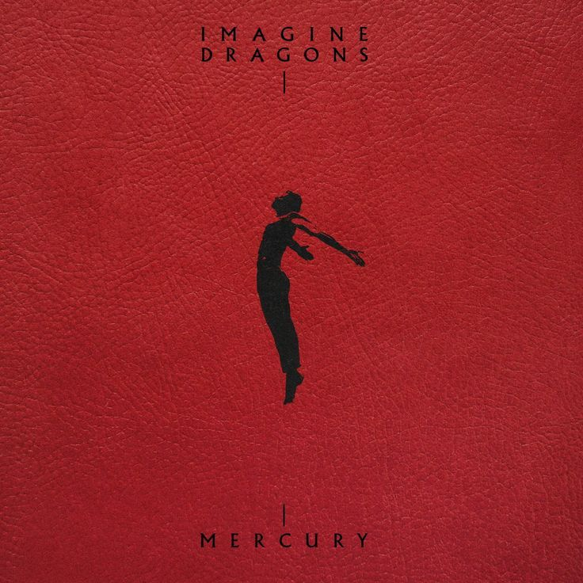

Night Visions
2012
Дебютный студийный альбом, принёсший группе мировую известность. Включает хиты «Radioactive» и «Demons».
- Radioactive
- Tiptoe
- It's Time
- Demons
- On Top of the World
- Amsterdam
- Hear Me
- Every Night
- Bleeding Out
- Underdog
- Nothing Left to Say
- Rocks (Bonus Track)
- Working Man (Bonus Track)
- Cha-Ching (Bonus Track)

Smoke + Mirrors
2015
Второй студийный альбом с более экспериментальным звучанием и глубокими текстами.
- Shots
- Gold
- Smoke and Mirrors
- I'm So Sorry
- I Bet My Life
- Polaroid
- Friction
- It Comes Back to You
- Dream
- Trouble
- Summer
- Hopeless Opus
- The Fall

Evolve
2017
Третий альбом с электронным звучанием, включающий мегахиты «Believer» и «Thunder».
- Next to Me
- I Don't Know Why
- Whatever It Takes
- Believer
- Walking the Wire
- Rise Up
- I'll Make It Up to You
- Yesterday
- Mouth of the River
- Thunder
- Start Over
- Dancing in the Dark

Origins
2018
Четвёртый альбом, выпущенный как компаньон к Evolve, с более экспериментальным звучанием.
- Natural
- Boomerang
- Machine
- Cool Out
- Bad Liar
- West Coast
- Zero (из "Ральф против интернета")
- Bullet in a Gun
- Digital
- Only
- Stuck
- Love

Mercury - Act 1
2021
Пятый альбом, посвящённый памяти близкого друга группы. Более личный и эмоциональный.
- My Life
- Lonely
- Wrecked
- Monday
- #1
- Easy Come Easy Go
- Giants
- It's Ok
- Dull Knives
- Follow You
- Cutthroat
- No Time For Toxic People
- One Day

Mercury - Act 2
2022
Шестой альбом, завершающий Mercury-серию. Самый масштабный проект группы на сегодня.
- Bones
- Symphony
- Sharks
- I Don't Like Myself
- Blur
- Higher Ground
- Crushed
- Take It Easy
- Waves
- I'm Happy
- Ferris Wheel
- Peace of Mind
- Sirens
- Tied
- Younger
- I Wish
- Continual
- They Don't Know You Like I Do